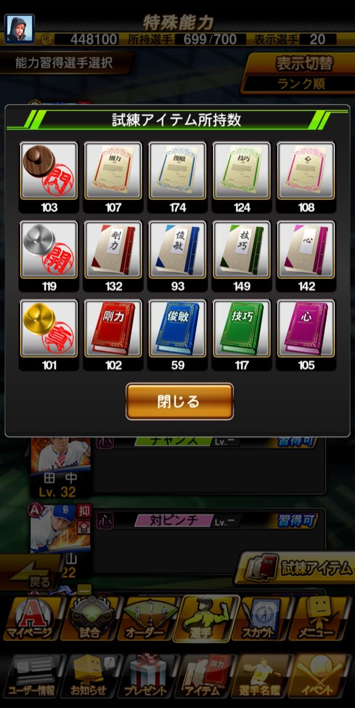

読み取り結果
1画像を選ぶ
アプリ内における「特殊能力 > 能力習得選手選択」画面のスクリーンショットを入力してください（上記スクリーンショット例参照）。複数枚まとめて選べます。
画像の読み取りでは、誤りが生じることがあります。読み取り結果は、表示される画像と見比べて確認してください。
2特能をあげる選手を選ぶ
読み取り結果が画像と違うときは、系統とLvを修正してください。
まだ選手がいません。スクリーンショットを選ぶか、手入力で追加してください。
3（任意）所持素材を入力する
入力すると過不足がわかります。「試練アイテム」ボタンで開く「試練アイテム所持数」画面のスクリーンショットからも読み取れます。入力した数はこの端末に保存されます。

画像の読み取りでは、数字を読み誤ることがあります。特に「0」「6」「9」は誤りやすいので、読み取り後は画像と見比べて確認してください。
必要な素材
必要コイン 0 所持 0 過不足 0
上段が必要数、下段が過不足です。赤字は不足している数です。